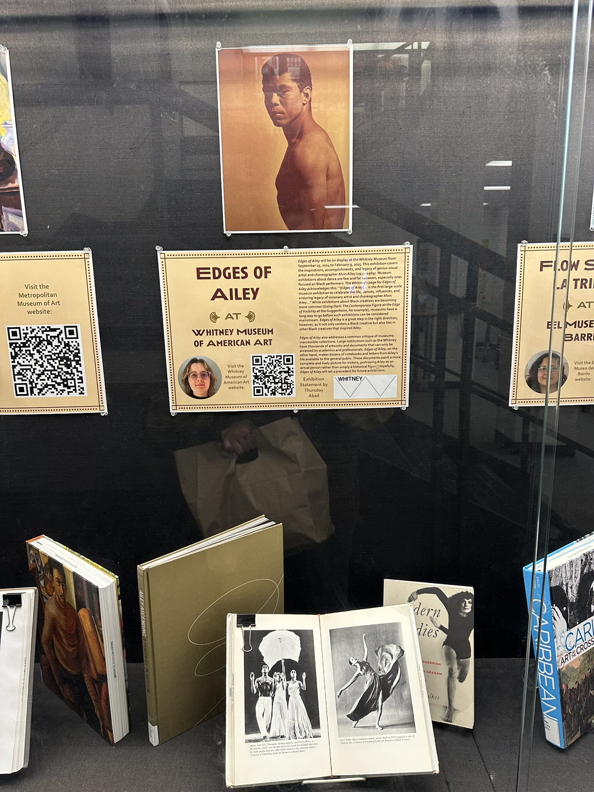
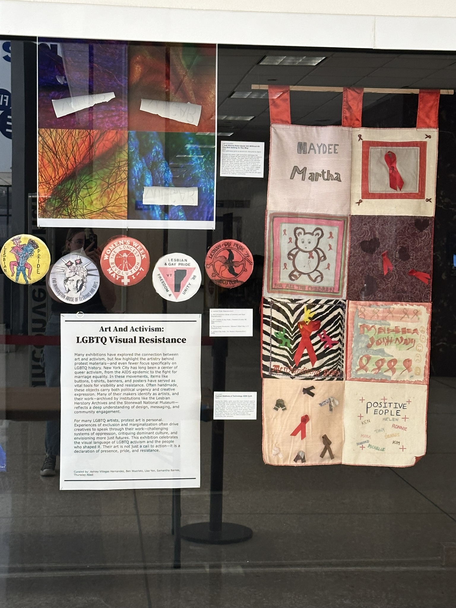

© Thursday Abad 2026

Collaborators: Samantha Barnes, Ashley Villegas Hernandez, JaDea Houston, Cassandra (Cassie) Hughes.

Collaborators: Samantha Barnes, Ashley Villegas Hernandez, Ben Wuoristo, Lisa Yen.

© Thursday Abad 2026